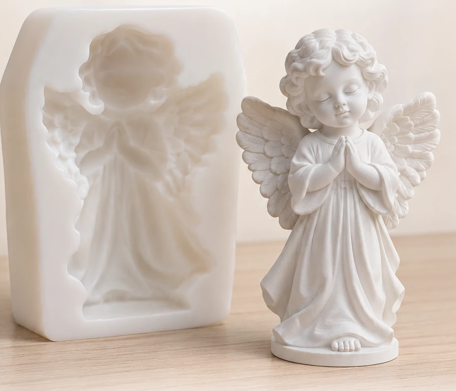

SILICONA PARA MOLDES
Reproduce cada detalle.
Silicona blanca RTV-2 para fabricar moldes y reproducir piezas de yeso decorativo, cerámica en frío y prototipos de suelas.

NOSOTROS
Especialistas en silicona para moldes
NEW SILICONE es una marca del grupo FUSER SAC dedicada a la venta de silicona blanca RTV-2. Atendemos a emprendedores, talleres y empresas que fabrican sus propios moldes.
Cuéntanos qué pieza quieres reproducir y qué cantidad necesitas para preparar tu cotización.
PRODUCTOS
Silicona blanca RTV-2
- Presentación
- 25 kg
- Color
- Blanco
- Tipo
- Dos componentes
Aplicaciones
Yeso decorativo
Para crear moldes de figuras, adornos y recuerdos en yeso.
Cerámica en frío
Para reproducir motivos decorativos y piezas artesanales.
Calzado
Para fabricar moldes de prototipos y muestras de suelas.
CONTÁCTENOS
Cotiza para tu próximo proyecto
Prepara tu solicitud y compártela con NEW SILICONE. Si tienes una foto de la pieza, adjúntala al escribirnos.
NEW SILICONE en TikTok